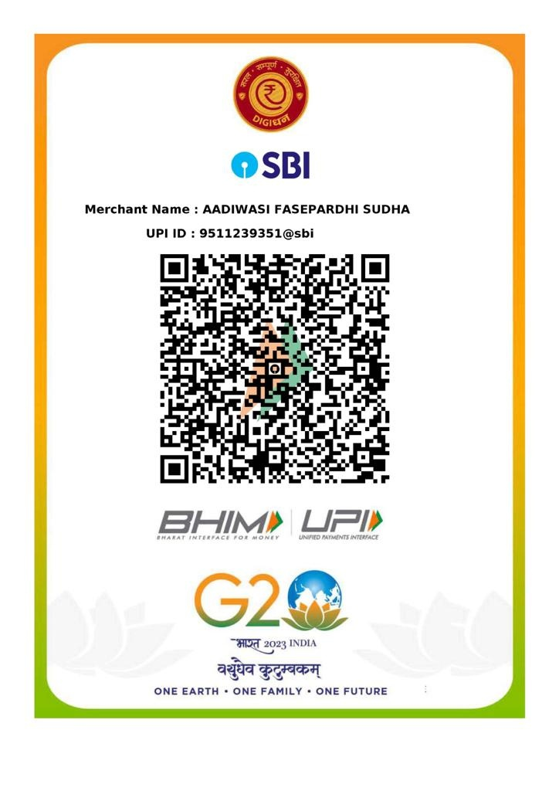

प्रश्नचिन्ह आदिवासी आश्रम शाळेत शिकणाऱ्या फासे पारधी समाजातील मुलांसाठी शिक्षण, अन्न, निवास, आरोग्य आणि उज्ज्वल भविष्य घडविण्यासाठी आजच सहकार्य करा.
फासे पारधी समाजातील वंचित मुलांना शिक्षण, निवास, अन्न आणि स्वाभिमानाचे जीवन देण्यासाठी आमचे सातत्याने कार्य सुरू आहे.
प्रश्नचिन्ह आदिवासी आश्रम शाळेत शिक्षण घेत आहेत.
राष्ट्रीय व राज्यस्तरीय सामाजिक कार्यासाठी सन्मान.
आदिवासी फासे पारधी सुधार समितीची स्थापना.
शिक्षणामुळे अनेक कुटुंबांच्या जीवनात सकारात्मक बदल.

फासे पारधी समाज अनेक वर्षे सामाजिक उपेक्षा, गरिबी आणि शिक्षणापासून वंचित राहिला. या मुलांना शिक्षणाच्या मुख्य प्रवाहात आणण्यासाठी आदिवासी फासे पारधी सुधार समितीने 2005 पासून सातत्याने कार्य सुरू केले आहे.
आज शेकडो विद्यार्थी निवासी आश्रम शाळेत मोफत शिक्षण, अन्न, निवास, आरोग्य सेवा आणि आधुनिक शिक्षण घेत आहेत.
प्रत्येक फासे पारधी मुलापर्यंत दर्जेदार शिक्षण पोहोचवणे.
सुरक्षित निवासी आश्रम आणि सन्मानाचे जीवन.
समाजातील प्रत्येक मुलाला स्वाभिमानाने जगण्याची संधी.
शिक्षणातून सक्षम, स्वावलंबी आणि जबाबदार नागरिक घडवणे.
एका व्यक्तीच्या स्वप्नातून सुरू झालेला प्रवास... आज शेकडो मुलांच्या आयुष्यात परिवर्तन घडवत आहे.

Years of Social Service
"प्रत्येक मुलाच्या डोळ्यांत एक स्वप्न असते... त्याला फक्त योग्य संधीची गरज असते." फासे पारधी समाज अनेक वर्षे उपेक्षा, गैरसमज आणि शिक्षणापासून वंचित राहिला. ही परिस्थिती बदलण्यासाठी मा. मतीन भोसले यांनी 2005 मध्ये आदिवासी फासे पारधी सुधार समितीची स्थापना केली.
आज प्रश्नचिन्ह आदिवासी आश्रम शाळेत 451 पेक्षा अधिक विद्यार्थी मोफत शिक्षण, निवास, अन्न, आरोग्य सेवा आणि उज्ज्वल भविष्याची संधी मिळवत आहेत.
दोन दशकांहून अधिक काळ फासे पारधी समाजाच्या शिक्षण व पुनर्वसनासाठी केलेल्या कार्याची राज्य आणि राष्ट्रीय स्तरावर दखल घेण्यात आली आहे.

सन 2018 मध्ये फासे पारधी समाजासाठी केलेल्या उत्कृष्ट सामाजिक कार्याबद्दल मा. मतीन भोसले यांना प्रतिष्ठेचा बाबा आमटे पुरस्कार प्रदान करण्यात आला.
📸 View Award
लोकमत समूहाच्या ऑनलाइन मतदानातून मा. मतीन भोसले यांना सामाजिक क्षेत्रातील विशेष सन्मान प्रदान करण्यात आला.
मा. मतीन भोसले यांना आजपर्यंत राज्य व राष्ट्रीय स्तरावर 50 पेक्षा अधिक पुरस्कारांनी सन्मानित करण्यात आले आहे. लवकरच या विभागात सर्व पुरस्कारांचे फोटो, व्हिडिओ आणि माहिती उपलब्ध करण्यात येईल.
View Gallery →A Journey of Compassion, Education and Social Transformation
"प्रत्येक मुलाला शिक्षणाचा अधिकार आहे. समाजाने नाकारलेल्या मुलांनाही स्वप्न पाहण्याचा अधिकार आहे."
सन 2011 मध्ये जिल्हा परिषद शाळेत शिक्षक म्हणून कार्यरत असताना श्री. मतीन शंकरराव भोसले यांनी फासे पारधी समाजातील शिक्षणापासून वंचित मुलांसाठी प्रश्नचिन्ह आदिवासी आश्रम शाळेची स्थापना केली.
सुरुवातीला केवळ 188 मुला-मुलींसह हा प्रवास सुरू झाला. मुंबई, नागपूर, चेन्नई, हैदराबाद आणि इतर शहरांतील रेल्वे स्थानके, बसस्थानके, सिग्नलवर भीक मागणारी आणि भंगार गोळा करणारी मुले शोधून त्यांना शिक्षणाच्या मुख्य प्रवाहात आणण्याचा अभूतपूर्व उपक्रम सुरू करण्यात आला.
हे कार्य अत्यंत कठीण होते. मर्यादित साधने, आर्थिक अडचणी आणि अनेक सामाजिक आव्हानांमध्येही शिक्षणाचा दीप सतत प्रज्वलित ठेवण्यात आला.
या महान कार्यामध्ये त्यांच्या पत्नी सौ. सीमा भोसले यांनी प्रत्येक संकटात खंबीरपणे साथ दिली. त्याग, समर्पण आणि अथक परिश्रम यांच्या बळावर संस्थेचा प्रवास अधिक मजबूत होत गेला.
तसेच श्री. ओमकार पवार आणि संस्थेचे सर्व शिक्षक, कर्मचारी, सहकारी, मित्रपरिवार, समाजहितैषी आणि असंख्य देणगीदार यांच्या सहकार्यामुळे ही शिक्षणाची चळवळ अधिक व्यापक होत गेली.
आज प्रश्नचिन्ह आदिवासी आश्रम शाळा ही केवळ एक शाळा नाही, तर शेकडो विद्यार्थ्यांसाठी आशा, शिक्षण, सुरक्षितता आणि स्वाभिमानाचे घर बनली आहे. आज येथे 451 हून अधिक विद्यार्थी निवासी शिक्षण, पौष्टिक आहार, संगणक शिक्षण, क्रीडा, संस्कार आणि उज्ज्वल भविष्याच्या दिशेने प्रवास करत आहेत.
प्रश्नचिन्ह आदिवासी आश्रम शाळेची स्थापना. 188 विद्यार्थ्यांसह शिक्षणाचा प्रवास सुरू.
मुंबई, नागपूर, चेन्नई, हैदराबाद आणि इतर शहरांतील रेल्वे स्टेशन, बसस्थानके, सिग्नलवर भीक मागणारी आणि भंगार गोळा करणारी मुले शोधून शिक्षणाच्या मुख्य प्रवाहात आणली.
👨🎓 451+ विद्यार्थी
🏫 निवासी आश्रम शाळा
🍛 अन्न व निवास सुविधा
💻 आधुनिक शिक्षण
❤️ समाज परिवर्तनाचा प्रवास
Honouring a lifelong commitment to education, social justice and the empowerment of the Pardhi community.
लोकमत समूहातर्फे समाजातील वंचित घटकांच्या शिक्षण व सामाजिक परिवर्तनासाठी केलेल्या उल्लेखनीय कार्याबद्दल प्रदान.
22 सप्टेंबर 2018
फासे पारधी समाजातील शिक्षण चळवळीला लोकमतने दिलेला विशेष सन्मान.
2018आजपर्यंतचा प्रवास हा एका व्यक्तीचा नाही, तर हजारो विद्यार्थ्यांच्या स्वप्नांचा, सहकाऱ्यांच्या समर्पणाचा आणि समाजाच्या विश्वासाचा प्रवास आहे. आपल्या सहकार्यामुळे अजून अनेक मुलांच्या आयुष्यात शिक्षणाचा प्रकाश पोहोचू शकतो.
❤️ Donate Nowतुमच्या सहकार्यामुळे बदललेले आयुष्य... शिक्षणामुळे घडलेले भविष्य.

लहानपणी योगेश पवार हे आपल्या कुटुंबासोबत शिकार करून जीवन जगत होते. त्या काळात मा. मतीन भोसले यांनी त्यांना प्रश्नचिन्ह आदिवासी आश्रम शाळेत आणले आणि शिक्षणाच्या प्रवाहात सहभागी केले.
शिक्षणाची आवड निर्माण झाली, योगा स्पर्धांमध्ये त्यांनी अनेक यश मिळवले आणि पुढे उच्च शिक्षण पूर्ण करून आज ते प्राध्यापक म्हणून कार्यरत आहेत.
त्यांचा संघर्ष आणि यशाचा प्रवास BBC Marathi सारख्या लोकशाही TV माध्यमांनीही लोकांसमोर आणला आहे.
आज येथे 451 हून अधिक विद्यार्थी निवासी शिक्षण, पौष्टिक आहार, संगणक शिक्षण, क्रीडा, संस्कार आणि उज्ज्वल भविष्याच्या दिशेने प्रवास करत आहेत.
प्रश्नचिन्ह आदिवासी आश्रम शाळेची स्थापना. 188 विद्यार्थ्यांसह शिक्षणाचा प्रवास सुरू.
मुंबई, नागपूर, चेन्नई, हैदराबाद आणि इतर शहरांतील रेल्वे स्टेशन, बसस्थानके, सिग्नलवर भीक मागणारी आणि भंगार गोळा करणारी मुले शोधून शिक्षणाच्या मुख्य प्रवाहात आणली.
👨🎓 451+ विद्यार्थी
🏫 निवासी आश्रम शाळा
🍛 अन्न व निवास सुविधा
💻 आधुनिक शिक्षण
❤️ समाज परिवर्तनाचा प्रवास
Honouring a lifelong commitment to education, social justice and the empowerment of the Pardhi community.
लोकमत समूहातर्फे समाजातील वंचित घटकांच्या शिक्षण व सामाजिक परिवर्तनासाठी केलेल्या उल्लेखनीय कार्याबद्दल प्रदान.
22 सप्टेंबर 2018
फासे पारधी समाजातील शिक्षण चळवळीला लोकमतने दिलेला विशेष सन्मान.
2018आजपर्यंतचा प्रवास हा एका व्यक्तीचा नाही, तर हजारो विद्यार्थ्यांच्या स्वप्नांचा, सहकाऱ्यांच्या समर्पणाचा आणि समाजाच्या विश्वासाचा प्रवास आहे. आपल्या सहकार्यामुळे अजून अनेक मुलांच्या आयुष्यात शिक्षणाचा प्रकाश पोहोचू शकतो.
❤️ Donate Nowतुमची छोटीशी मदत एका मुलाच्या आयुष्यात मोठा बदल घडवू शकते.
एका विद्यार्थ्याचा अन्न व शिक्षणाचा महत्त्वाचा खर्च.
Donate ₹5,000
UPI QR Code स्कॅन करून थेट देणगी पाठवा.
Account Name:
Adivasi Fase Pardhi Sudhar Samiti
Bank:
State Bank of India
IFSC:
SBINXXXXXXXX
Account No:
XXXXXXXXXXXX
आम्ही CSR कंपन्या, Corporate Foundations, Trusts आणि International Donors यांचे सहर्ष स्वागत करतो. तुमच्या सहकार्यामुळे शेकडो विद्यार्थ्यांचे भविष्य उज्ज्वल होऊ शकते.
प्रत्येक फोटो एका मुलाच्या बदललेल्या आयुष्याची, आशेची आणि उज्ज्वल भविष्याची कहाणी सांगतो.


तुमच्या विश्वासामुळे आणि सहकार्यामुळे शेकडो विद्यार्थ्यांचे जीवन उजळत आहे.
शिक्षणासाठी सतत मदतीचा हात देणाऱ्या सर्व देणगीदारांचे मनःपूर्वक आभार.
कॉर्पोरेट सोशल रिस्पॉन्सिबिलिटी माध्यमातून सहकार्य करणाऱ्या सर्व संस्थांचे आभार.
देश-विदेशातून विश्वास दाखवून सहकार्य करणाऱ्या मित्रांचे मनःपूर्वक स्वागत.
Adivasi Fase Pardhi Sudhar Samiti
Mangrul Chawhala,
Tal. Nandgaon Khandeshwar,
Dist. Amravati,
Maharashtra - India
+91 XXXXXXXXXX
info@afpss.org.in